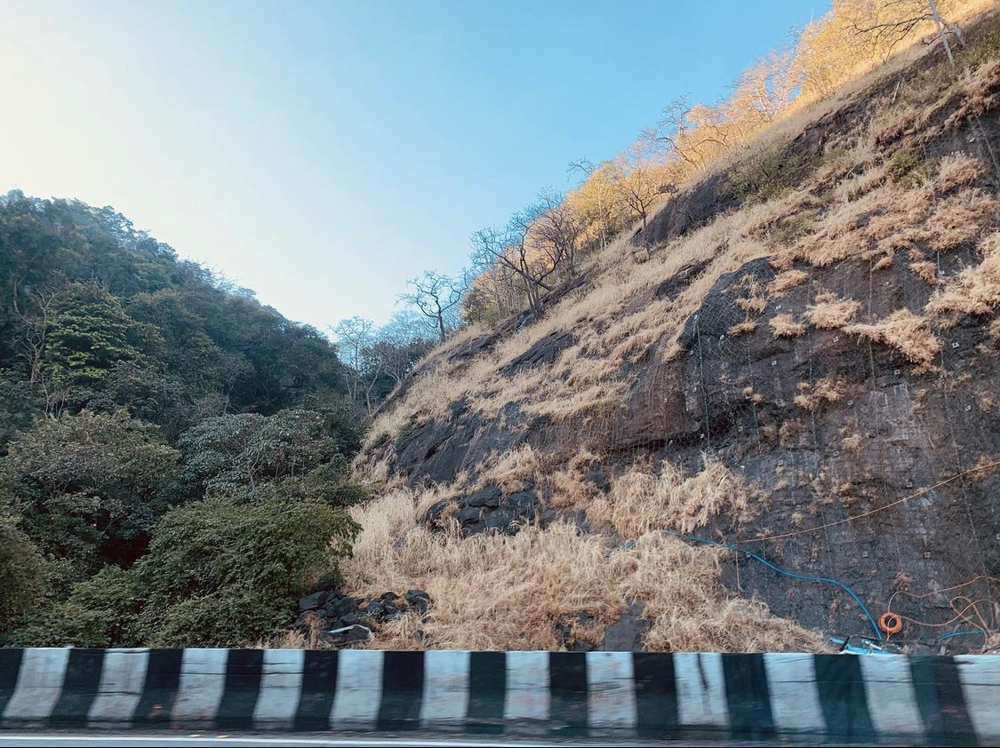

Manav Shah Age 13
Polychrome
Nature
This picture was named Polychrome Nature as it expresses the
natural colours and a blend between nature
This picture transcends the genre and even photography
This picture was clicked by Manav Shah at the age of 14
Manav Shah Age 12
The City
Through
This Picture was clicke in New York in 2019
the entire journey of your
diamonds, right from their origin till they reach to your hands.